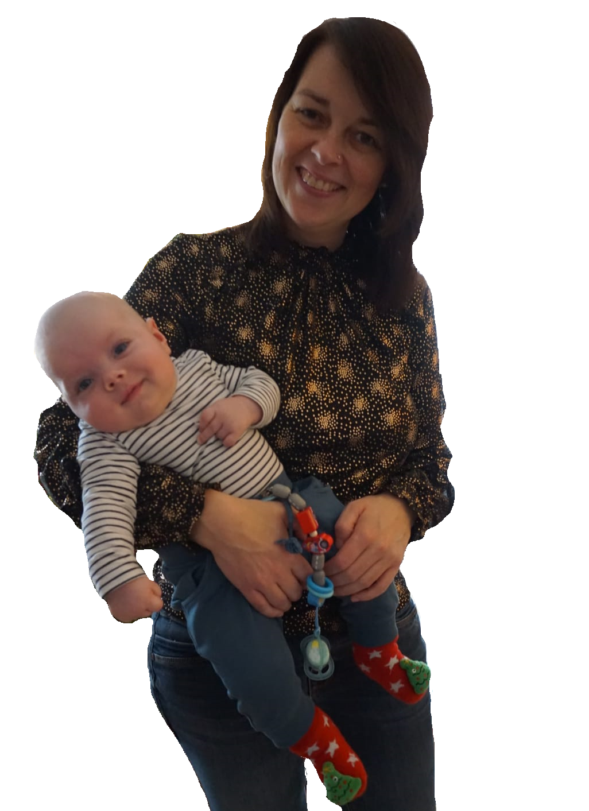
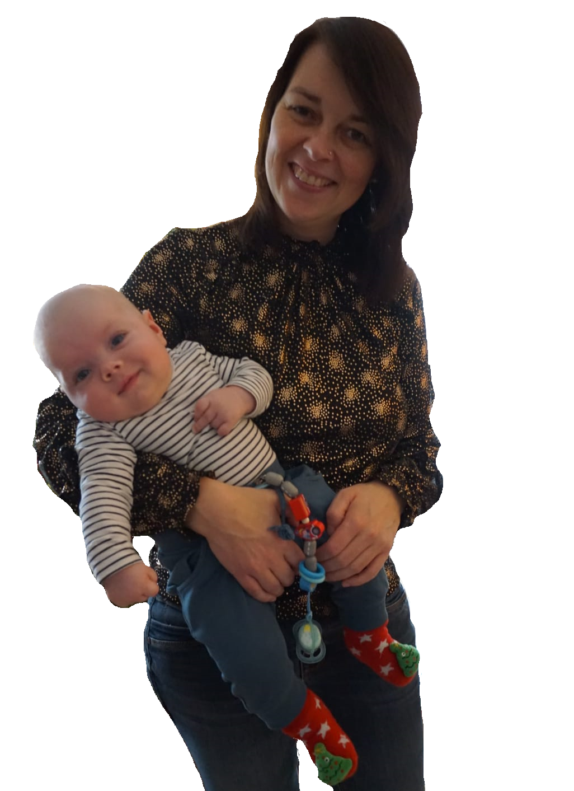

Lieber Michael, Liebe Silvia. Ich wünsche euch...
Alles Liebe und Gute zur Hochzeit!
Ich wünsche euch zusammen mit den Kids eine tolle Zeit, beruflich weiterhin viel Erfolg aber am Wichtigsten ist natürlich das ihr immer schön gesund bleibt! Und das vor allem auch all das, was ihr euch für die Zukunft selbst noch so wünscht, in Erfüllung geht.
Da man meiner Meinung nach in der Regel viel zu selten Danke sagt, will ich das hiermit, an diesem besonderen Tag, wenigenstens ein bisschen, nachholen:
Danke das ihr Zwei immer für mich da seid und immer zu euch kommen kann, wenn etwas ist. Ich weiß nicht ob man sich dafür bedanken muss, aber ich freue mich darüber das wir zusammen immer eine schöne Zeit haben können. Auch wenn es nur mal für ein paar Stunden nach Frankfurt kommen ist, weil ich gerade in der Gegend bin.
Danke Michael, das ich dir damals so oft auf die Nerven gehen konnte und du mich trotz, das ich dir so oft Autos geklaut und dann angemalt habe, noch so gerne hast. Danke das du mir in all den Jahren ein toller großer Bruder, aber vor allem auch Vorbild warst. Ich denke ohne gewisse Einflüsse von dir (sei es das Interesse für Technik oder für Gaming oder andere Dinge) wäre ich heute nicht zu der Person geworden, die ich bin.
Da ihr nun auch plant das Kinderzimmer umzubauen um den Kids mehr Platz einzuräumen, und weil so eine Hochzeit mit allem drum und dran sicherlich auch nicht so günstig ist,
würde ich euch beiden gerne etwas Geld schenken.
Ich hoffe das euch dieses kleine Geschenk dabei hilft das neue Kinderzimmer zu einem besonderen Ort für die Kleinen zu machen und damit ihr eure Wohnung noch mehr nach euren Wünschen einrichten könnt.
Ihr könnt mir ja gerne in einem ruhigen Moment die Kontoverbindung zukommen lassen wo das Geld hin soll, und dann überweise ich euch es.
Das soll der vielen Worte nun auch reichen.
Alles Liebe und Gute, Euer Martin.
Hab euch lieb :)
PS: Ich dachte mir normale Karten sind langeweilig, also hab ich mal etwas gemacht, was eher zu mir passt.